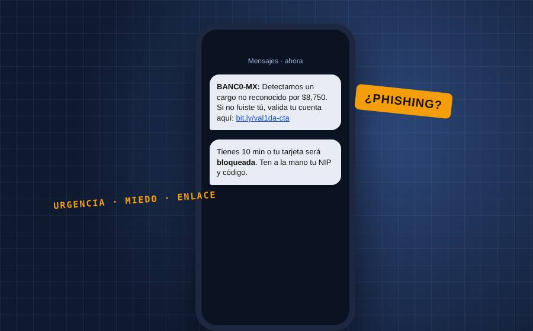
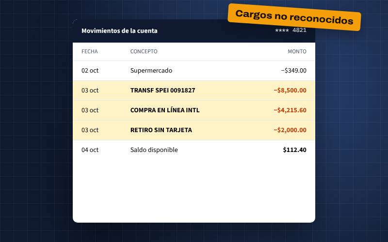
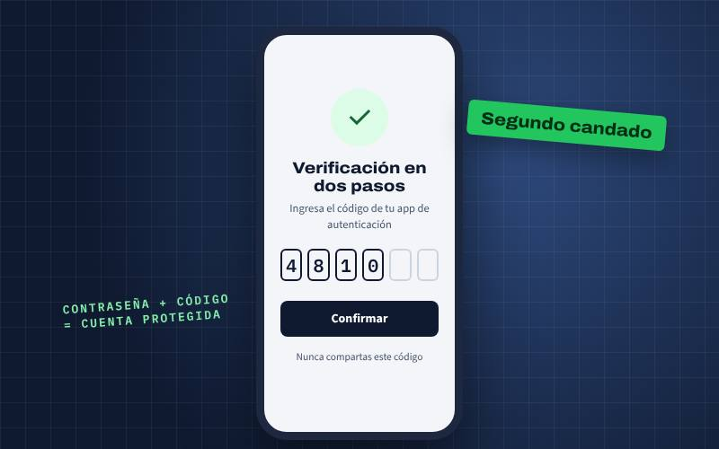

El fraude es el delito más frecuente en México y cada vez ocurre más por internet. Más pagos digitales también significan más oportunidades para los estafadores.

Toca cada cifra para ver el dato que la explica.
Porcentaje de la población de 6 años o más que usa internet. Más personas en línea también significa más posibles víctimas de un fraude digital.
Fuente: INEGI, 2026b (ENDUTIH 2025)

costó la delincuencia a los hogares en 2025, el 1.06 % del PIB, entre pérdidas y gastos en protección. Ese año, 23 millones de personas fueron víctimas de algún delito, y el fraude fue el más frecuente.
INEGI, 2026a
Marca lo que ya haces y comparte esta infografía con tu familia, sobre todo con quien apenas empieza a usar la banca en línea.
Escanea para ir a la CONDUSEF y presentar tu reclamación.
Línea de denuncia de la Guardia Nacional. Llama a tu banco primero para bloquear tu tarjeta.